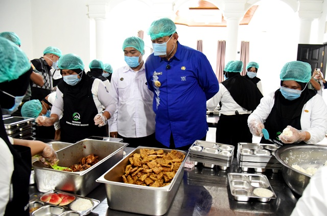

Program Makan Bergizi Gratis Disambut Antusias Siswa-Siswi SDN Pekauman 71
Siswi SD menerima Makan Bergizi Gratis Pada Saat Istirahat Jam Makan Siang (Tegal)
Tegal - Program Makan Bergizi Gratis (MBG)
Program yang digagas pemerintah resmi berjalan di sejumlah sekolah dan fasilitas umum, Jumat (4/10). Kegiatan ini mendapat sambutan positif dari masyarakat, terutama para pelajar dan keluarga kurang mampu yang menjadi sasaran utama.
Melalui program MBG, siswa dan warga dapat menikmati menu makan sehat yang terdiri dari nasi, lauk pauk berprotein, sayur, buah, serta susu.

Pemerintah Kota Tegal observasi Pelaksanaan Proses Makan Bergizi Gratis
“Program ini sangat membantu, terutama bagi anak-anak sekolah. Selain bisa makan gratis, mereka juga belajar pentingnya menjaga pola makan sehat,” ungkap Rina, salah satu orang tua siswa.
Siswa-Siswi Pekauman 71 menikmati Makanan Makan Bergizi Gratis
Pemerintah daerah menargetkan distribusi MBG dilakukan rutin setiap minggu, dengan melibatkan pihak sekolah, puskesmas, dan kader posyandu.